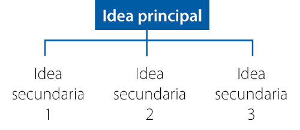
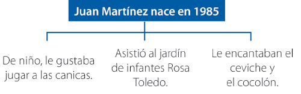

Comprendo para saber
Alumno:
Comprendo para saber
Alumno:
Un texto está formado por uno o más párrafos y cada párrafo tiene al menos una o más oraciones. Cada oración refleja una idea o pensamiento. Como no todas las ideas tienen la misma importancia, en un párrafo hay alguna oración que es más importante que las demás. Esta oración corresponde a la idea principal del párrafo y se caracteriza por indicar algo relevante sobre el tema que se está tratando.
La idea principal no está necesariamente ubicada al inicio del párrafo, puede estar al inicio, en el medio o ser la última oración; pero responde siempre a la pregunta ¿de qué trata el párrafo?
Las otras oraciones que constituyen un párrafo corresponden a ideas secundarias, por tanto, no se relacionan de forma directa con el tema que se está tratando. Su función es ampliar la información que ofrece la idea principal: dependen de ella. Si una idea secundaria se suprime, el sentido del párrafo no sufre alteración significativa. Ejemplo:
Juan Martínez nace en 1985. De niño, le gustaba jugar a las canicas y le encantaban el ceviche y el cocolón. Asistió al jardín de infantes Rosa Toledo.
Si eliminamos una de las oraciones resaltadas en azul, el texto sigue teniendo sentido.
Juan Martínez nace en 1985. De niño, le gustaba jugar a las canicas y le encantaban el ceviche y el cocolón.
Juan Martínez nace en 1985. De niño, le gustaba jugar a las canicas y asistió al jardín de infantes Rosa Toledo.
Gráficamente, podemos representar la estructura del párrafo de la siguiente manera:
|  |  |
Un párrafo siempre debe tener una sola idea principal y no podemos tener un párrafo con solo ideas secundarias. Por ejemplo, si del caso anterior suprimimos la idea principal, el sentido del párrafo se pierde:
De niño, le gustaba jugar a las canicas, asistió al jardín de infantes Rosa Toledo y le encantaban el ceviche y el cocolón.
Hay que evitar, además, que las ideas secundarias tengan a su vez otras ideas que las apoyen. El exceso de oraciones secundarias confunde al lector, le quita agilidad a la lectura y a la comprensión del sentido del párrafo.